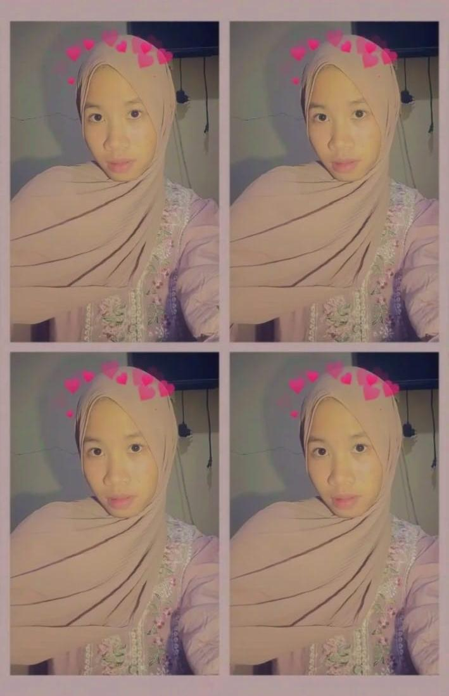

Happy Birthday
Annora Dannelle Putri 🎉

✨ "Hari ini adalah hari yang sangat istimewa, hari di mana dunia mendapatkan salah satu senyuman terbaiknya."
Semoga di usia yang baru ini kamu selalu diberikan kesehatan, kebahagiaan, dan kemudahan dalam setiap langkah. Semoga semua impian, cita-cita, dan harapanmu dapat terwujud satu per satu. Terima kasih sudah menjadi teman yang baik. Tetap menjadi pribadi yang ceria, kuat, dan menginspirasi.🍰🎈
Selamat bertambah usia, semoga semua hal baik selalu menyertaimu. Happy Birthday! 🎂💐
- From Restu -
Shape of My Heart
Klik play untuk memutar lagu 🎵